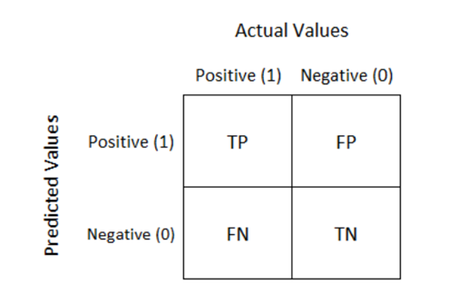
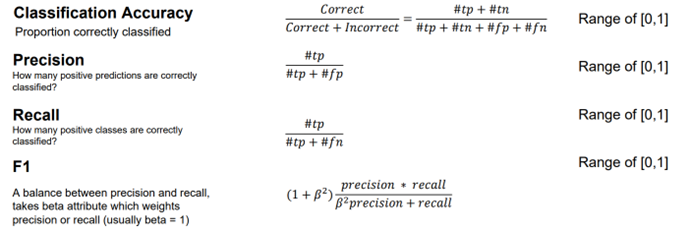
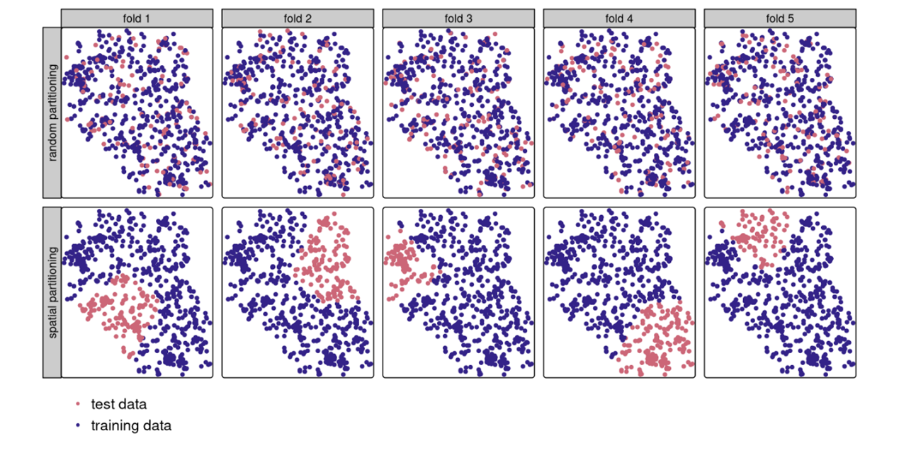

7 Week 8 Advanced Classification
7.1 Summary
7.1.1 Object based image analysis
Object-based image analysis (OBIA) is a method used in remote sensing and digital image processing for extracting information from satellite or aerial imagery. OBIA groups pixels into meaningful objects or segments based on their characteristics such as spectral, spatial, and contextual properties.
Main processes:
Image Segmentation
Segment the preprocessed image into homogeneous regions or objects based on similarities in spectral, spatial, and/or textural characteristics.
Feature Extraction
A set of descriptive features are extracted for each object.
Classification
Objects are classified into different classes or categories using features.
7.1.2 Sub pixel analysis
Spectral Mixture Analysis (SMA), Linear spectral unmixing
Sub-pixel analysis refers to a technique used in remote sensing and image processing to analyze and extract information at a spatial resolution finer than that of individual pixels, especially when:
objects of interest are smaller than the size of a pixel
capturing spatial details beyond the native resolution of the sensor
V-I-S model:
The V-I-S model in urban areas: Vegetation-Impervious surface-Soil (V-I-S) fractions
7.1.3 Accuracy assessment
Confusion matrix

In more detail, there are three main terms:
- Accuracy
- Total classified correction
- Precision
- In all the positive prediction, how many are truly positive?
- Precision focuses on the proportion of positive predictions that are correct, emphasizing the system’s ability to avoid false positives.
- Recall
- In all the true positive instances, how many were correctly identified?”
- Recall focuses on the proportion of actual positive instances that are correctly identified by the system, emphasizing the system’s ability to avoid false negatives.
- the F1-score
- which is the harmonic mean of precision and recall, is often used to provide a single measure that balances both metrics.
- A balance between precision and recall, takes beta attribute which weights precision or recall (usually beta = 1).

These two metrics are often inversely related; improving one may lead to a decrease in the other. Therefore, it is basically a trade-off: We can’t have both a high producer accuracy (recall) and a high user’s accuracy (precision).
The main point is: we want to maximise true positives and minimise false positives.
7.1.4 Cross validation
Cross-validation can estimate how the model will generalize to an independent dataset. When limited data is used for model training, cross-validation can provide higher sufficient use of data for model training.
spatial autocorrelation:
Problem: spatial autocorrelation between training and test sets, it may cause overfitting.
When the training data close to the testing data, the Spatial autocorrelation may happen between training and test sets.
In more specific, when it comes to the Spatial autocorrelation, the Waldo Tobler’s first Law of Geography can be mentioned…
“Everything is related to everything else, but near things are more related than distant things.”

In more detail:
In vector data, objects may accumulate in the center and have similar characteristics or attributes.
In remote sensing data, two points may share the same pixel, that means those two points have same value.
Overfitting:
Result: the model will have better accuracy that it actually does—thel model is not generalisable.
Spatial Cross validation:
Geographic data is special. That means points are not statistically independent because training and test points in conventional CV are often too close to each other (see first row of Figure 12.3). ‘Training’ observations near the ‘test’ observations can provide a kind of ‘sneak preview’: information that should be unavailable to the training dataset. To alleviate this problem ‘spatial partitioning’ is used to split the observations into spatially disjointed subsets. This partitioning strategy is the only difference between spatial and conventional CV. As a result, spatial CV leads to a bias-reduced assessment of a model’s predictive performance, and hence helps to avoid overfitting.
Spatially partition the folded data, folds are from cross validation.

7.2 Application
Last week, we have mentioned the overall workflow of crop classification. In this week, we will apply it to a real-work issue (crop type classification).
Asli Ozdarici Ok (2012) indicated that the overall accuracies of the parcel-based approach computed for the Random Forest method is 85.89%, which is about 8% better than the corresponding result of Maximum Likelihood Classification (MLC).
Therefore, in this case, I will use the Random Forest to classify crop types. I will use a python notebook as a starter, which is available on the developmentseed, and put the link at the bottom. In general, I will summarize the processes and highlight the vital part.
7.2.1 Random Forest Model for Crop Type and Land Classification
- Preparing Label data
- Draw the polygon (lines or points) by satellite imagery.
- Or input already prepared training dataset including each landuse class.
- Inputing Imagery from GEE
- Training model
Dividing Trainning and testing data set
- split 20% of the data to reserve for testing the quality of the trained model.
Main types of objects
- array([buildings,‘Forestland’, ‘Grassland’,‘Maize’,‘Shadow’, ‘Sugarcane’, ‘Sunflower’, ‘Waterbody’], dtype=object)
- Some index may help trainning model such as NDVI and NDWI
Create a Random Forest Classifier object
clf = RandomForestClassifier( n_estimators=200, class_weight=class_weight_dict, max_depth=6, n_jobs=-1, verbose=1, random_state=0)
- Evaluate the model
- We can use the confusion matrix.
- A confusion matrix shows a comparision between what the class is based on the test data, and what the model predicted it to be.
- Mapping the result
- we can use the trained RandomForestClassifier over a whole satellite image that covers a larger geospatial location.
7.3 Reflection
This week, we focused on improving EO data processing and evaluating classification model accuracy. We discussed the importance of selecting suitable datasets, using techniques like cross-validation, and assessing accuracy with methods such as error matrices and Kappa statistics. We also considered spatial autocorrelation and explored strategies like object-based image analysis and spatial cross-validation to address it. Finally, I read a paper evaluating the performance of server models and used a Python notebook on DevelopmentSeed that used random forests for crop type classification.